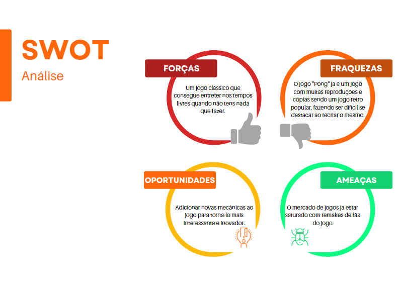

Ao-Pong
O objectivo deste projeto é refazer um jogo retro que sempre gostei, deixando o jogo mais suave que a sua versão original de 1972, onde a velocidade da bola vai aumentando com o tempo.


O objetivo deste projeto é criar o jogo clássico “Pong” 2D através do Visual Studio Code utilizando JavaScript.
Sendo um jogo onde moves uma barra com as setas para a esquerda e direita para rebater a bola contra uma AI que segue a bola, até a bola passar por uma das barras e entrar, tornando-se mais difícil quanto mais tempo passa porque conforme o angulo que a bola foi rebatida a velocidade da mesma aumenta.
AAAAA minha sincera opinião para a minha nota final da PAP é um 14 pelo esforço no meu trabalho apesar de haver falta de criatividade no meu projeto.
© Leo Montes